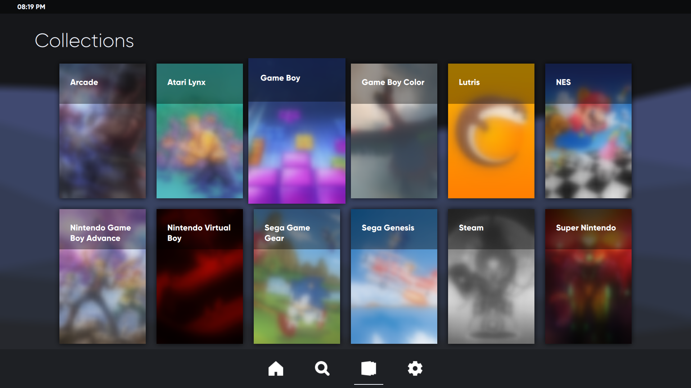
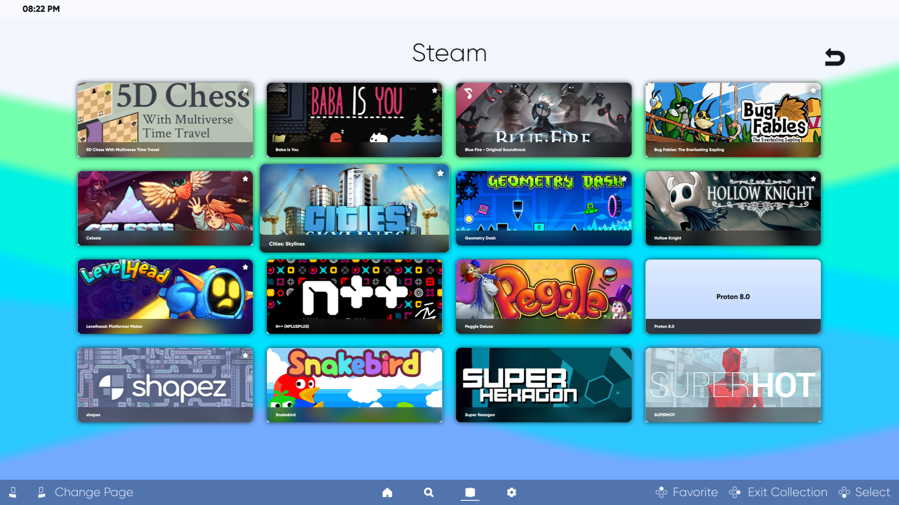

Gallery
Home Page
Search Page
Feed Page (Accessible within the Search Page)
Collections Page
Settings
Favorites Section (Customization 1)
Search Page Games List (Customization 2)
Collections Page Again (Customization 3)

Collections Page Games (Customization 4)
